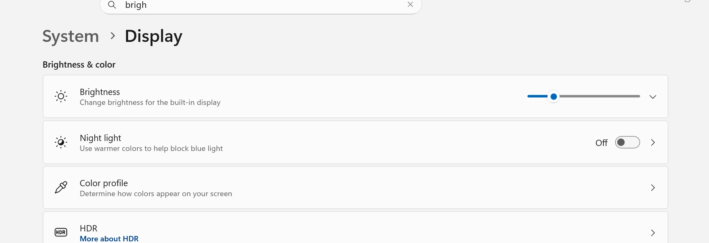

Battery life guide
Improve Laptop Battery Life
If your laptop no longer lasts as long away from the charger, the cause is often a mix of screen brightness, startup apps, background activity, heat, and battery age. Small changes can make a real difference both for daily runtime and long-term battery wear.
This guide focuses on practical fixes that are worth doing first, especially if the battery still seems usable but drains faster than you want.
Quick wins
Quick ways to improve laptop battery life
- Lower brightness. This is one of the quickest and most reliable ways to reduce drain.
- Close apps you are not using. Browsers, chat apps, launchers, and editors often keep working in the background.
- Restart the laptop. This clears stuck tasks that may be quietly using power.
- Unplug accessories you do not need. External devices and USB gear can add to power use.
Windows settings
Windows battery settings
Windows battery saver and power settings can help limit unnecessary drain. Use a power mode that favors efficiency when you are away from the charger, especially during browsing, office work, or video calls.
If runtime still feels poor after normal settings changes, compare symptoms with the Battery Draining Fast Laptop guide and check actual wear using the How to Check Laptop Battery Health guide.

Display
Screen brightness and display habits
Brightness is one of the biggest battery drains on many laptops. If you normally keep the display near maximum, reducing it even a little can noticeably improve runtime.
A higher refresh rate, bright keyboard lighting, and always-on external displays can also shorten battery life.

Background load
Startup apps and background apps
Too many startup apps can hurt both battery life and performance. Programs that launch with Windows often stay active even when you forget they are open.
Review startup items and background-heavy apps regularly. If the laptop also feels sluggish, the Slow Laptop Fix guide can help you sort out what should be disabled.
Heat and wear
Overheating and battery drain
Heat makes the laptop work harder and accelerates long-term wear. If the battery drains much faster while the system feels hot, cooling may be just as important as power settings.
The Laptop Overheating Fix guide is worth checking when short runtime and heat happen together.
Charging habits
Charging habits that reduce wear
- Avoid leaving the laptop in very hot places while charging
- Try not to let the battery sit at 0% for long periods
- Use the correct charger or wattage for the laptop
- Take advantage of battery protection limits if your laptop maker offers them
- Keep vents clear so the laptop stays cooler while plugged in
If you want more lifespan context, the guide on how long a laptop battery should last explains how wear builds up over time.
Avoid mistakes
What not to do
- Do not ignore overheating while trying to improve runtime
- Do not assume settings alone can fix a battery that is already heavily worn
- Do not keep forcing heavy gaming or editing on battery if runtime is already poor
- Do not keep troubleshooting forever if the battery report clearly shows major wear
If the battery is simply worn out, the next step may be checking replacement signs rather than chasing more minor optimizations.
FAQ
How can I improve laptop battery life quickly?
The fastest improvements usually come from lowering brightness, closing background apps, checking startup apps, and reducing heat. Those changes often improve runtime right away.
Does lowering brightness really help battery life?
Yes. The screen is one of the biggest battery users on many laptops, so reducing brightness can make a noticeable difference.
Do startup apps affect battery life?
Yes. Extra startup apps often stay active in the background, using CPU, memory, and network activity that drains battery faster.
Can overheating reduce battery life?
Yes. Heat increases power use in the short term and speeds up long-term battery wear. A cooler laptop usually lasts longer per charge and over its overall lifespan.
Is it bad to keep a laptop plugged in all the time?
Keeping a laptop plugged in is not always harmful by itself, but constant heat and staying at full charge for long periods can add wear over time. Good ventilation and battery protection settings help.
When should I stop trying to improve battery life and replace the battery?
If runtime is still poor after the usual fixes and the battery report shows heavy wear, replacement may make more sense than more tweaking. Swelling, shutdowns, or very low health are stronger replacement signs.